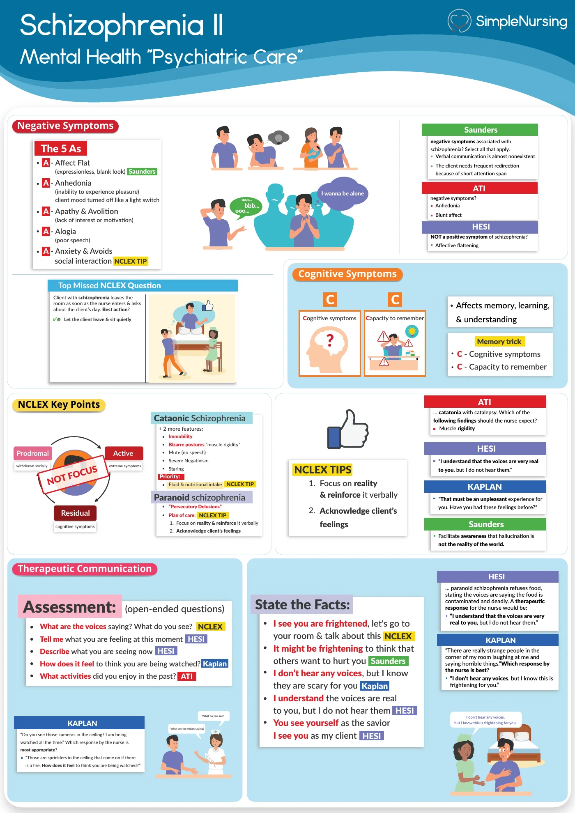
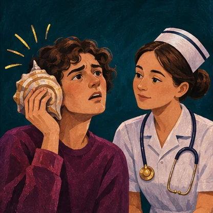
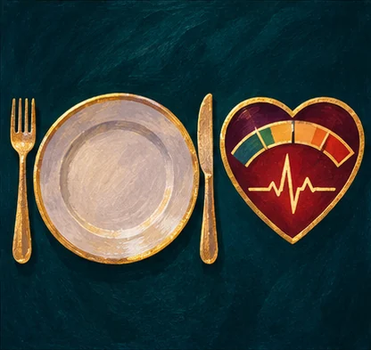

A patient discloses current suicidal intent. What takes priority?
- Think…
- Stay with the patient, summon the clinical team and initiate the appropriate observation and safety measures.
NUR 175 · Exam 3 · Simple exam guide
Modules 8–10

Check immediate danger when the stem mentions voices, impulsivity, withdrawal, suicidal thinking or medical instability.





B. What is the voice saying, and do you feel you might act on it?
The content and the patient’s ability to resist guide immediate safety precautions.
C. Assess circulation and obtain prompt evaluation of rhythm and electrolytes.
Purging can disturb electrolytes and cardiac conduction.